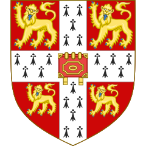
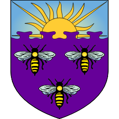

About
I am a PhD student in the Department of Computer Science and Technology at the University of Cambridge, supervised by Dr. Rika Antonova and Prof. Robert Mullins, and part of CamRAL. I previously worked with Dr. Edward Johns in the Robot Learning Lab at Imperial College London.
My PhD is funded by AIxSIM, an ARIA-funded cross-stack simulation effort for novel AI hardware. I build hardware for agents, and agents for hardware.
I want to see a compute stack that rebuilds itself, where agents redesign the very models, kernels, compilers and instruction sets they run on, and every step is checked by proof rather than trust. That starts with agent-driven design space exploration, where agents, rather than exhaustive sweeps, decide what to build next.
Research, up the stack
- Self-improving agents
Agents that evolve alongside their own evaluators: Red Queen Gödel Machine
- Serving
Splitting inference stages across specialised hardware: When Does Disaggregation Pay?
- Kernels
Close-to-metal kernel generation for emerging hardware, and kernel optimisation for GPUs: KernelCraft, AReaL-TIK
- Accelerators
NPU quantisation and design space exploration for agentic inference:PLENA, MemExplorer, diffusion language models
- Microarchitecture
Design space exploration for branch predictors: PIP
Education
-
-
Master's in Computing (AI and Machine Learning), Imperial College London
-

Bachelor's in Computer Science, University of Manchester
Industry
-
Microsoft Research
-
Amazon
-
Arm
Teaching
-
Teaching Assistant, University of Cambridge
-
PASS2 Leader, University of Manchester
Publications * Equal contribution
Talks
Service
© 2026 Jiayi Nie